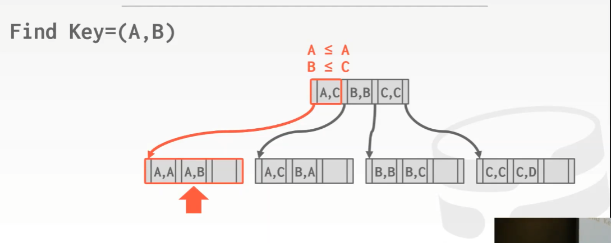

注: 本文首发我的 b 站专栏文章CMU 15-445/645-笔记-07-树索引-part1
课程目标
表索引
做一定范围扫描的查询需要用到表索引，在这种情况下，hash 表并不能满足要求，因为 hash 表只能用来进行单个 key 的查找
那么表索引是什么？
简单来讲，表索引就是 表中属性 的 子集 的一个 副本，它以一种更高效的方式存储，以方便能做更高效的查询操作（相比循序扫描来说）
注意，表索引是该表的一个副本，它必须和表保持同步。比如如果表中的某个 tuple 有更新，那么这个更新也应该反映到对应的索引上
表索引的操作对于应用开发人员来讲，是完全透明的
虽然大量的索引可以让查询变得更快，但维护这个表索引也需要一定的代价，所以就存在 trade-off。比如大量的索引会占用 page 和 Buffer 池的空间，将它写出到磁盘时，就会占用磁盘空间。如果表里面有 1000 条索引，现在要进行插入操作，那么就必须对这些索引更新 1000 次，直到这些索引被修改完成，这个插入操作才会被认为已经完成了。
在做查询操作时，DBMS 自己会去选择对于查询来讲最优的索引，即查询优化
B+ Tree

有一类数据结构叫做 B-Trees（B 树家族），在它里面，有一种特定的数据结构，叫做 B-Tree。
实际上 B-Tree 和 B+ Tree 是不同的数据结构
B-Tree 是在 1971 年提出的，2 年后的 1973 年提出的 B+ Tree，那个时候并没有什么 paper 去描述什么是 B+ Tree，不过 1979 年倒是有篇 paper 做了对 B+ Tree 和 B-Tree 的描述
顺便，IBM 在 1973 年发明了 B+ Tree
然后在 70-80 年代间，出现了它们的很多变种，比如 B* Tree 是 B-Tree 的变种，而 B^link - Tree 是在 1981 年出现的，由 CMU 首发
即 《Efficent Locking for Concurrent Operations on B-Trees》，作者 Philip Lehman，现在依然在 CMU
数据库系统一般用的是 B+ Tree 而不是 B-Tree，虽然 PostgreSQL 文档中写的是用 B-Tree，但实际上它用的就是 B+ Tree
B+ Tree 是一种自平衡的树形数据结构，B means Balance
基本思想是，往 B+ Tree 中插入数据时，它会保证数据的有序性，这允许我们可以沿着叶子节点进行高效的搜索或者循序扫描，插入和删除的时间复杂度都是 O(log n)，因为 B+ Tree 是平衡的，所以它的复杂度始终是 O(log n)，即对于一个叶子节点上的任何 key 来说，不管它距离根节点有多远，时间复杂度始终是 O(log n)
B+ Tree 是这样一种数据结构，它能在磁盘非常缓慢，并且内存有限的情况下，进行高效地索引查找
相比于 B-Tree，B+ Tree 有一个很棒的优势，就是当遍历到 B+ Tree 底部时，可以沿着叶子节点进行循序扫描，无须回过头再递归遍历。因为从上到下，按范围找到了树的父节点下指代的某段区域叶子节点，结果就在这个范围内，循序扫描就好了
一篇被很多人引用的 paper – 《The Ubiquitous B-Tree》
那么 B+ Tree 有哪些属性呢？
B+ Tree 被认为是一种多路查找树（Multi-way search tree），意味着在树中的每个节点处，它可以通过 M 条（也不完全总是 M 条）不同的路线到达其他节点
注意，这里的 平衡 指的是，任何叶子节点到根节点始终是 O(log n)
这里，每个节点必须保证至少是半满的，对于能存放自节点中 key 的数量来说，B+ Tree 中节点所管理的 key 的数量至少为 M/2 - 1 个（这里的 M 指树的高度），但 key 的数量必须小于 M - 1。删除的时候，如果节点不处于半满的状态，那么就得将周围得数据移到这个节点中，让它变成半满的状态
如果一个 inner node 中有 k 个 key，那么对于这个 inner node 来讲就有 k + 1 个非空 children 节点
例子
在任何 inner node 中，它们并没有 sibling pointer，但叶子节点有
inner node 是 key 和 指针 的结合体，inner node 里面的指针始终指向的是另一个节点，如果什么也没有就指向 null，key 就是在任意属性上构建的索引。当使用一个给定的 key 来进行搜索时，可以通过比对这些 inner node 中 key 的大小来决定该往哪边遍历
对于叶子节点，它有 key 也有 value，这个 value 可以是一个 tuple 的 record ID，也可以是 tuple 自身
inner node 主要保存的是指针，而叶子节点主要保存的是数据
每个 B+ Tree 的节点其实就是一个 key/value 对 数组。如果你是在叶子节点上，那么可以通过 key 来判断这是不是你要的东西；如果是在 inner node 上，那么可以通过 key 来判断你是往左走还是往右走
例子
图中可以看出，B+ Tree 中叶子节点里，key/value 对是分开存储的，但这里的 key/value 始终都在同一个 page 上，分开存的原因是它们的大小不一样
使用二分查找并不需要用到 value，只需要用到的是 key，分开来可以更高效地在 key 之间跳转，而 value 通常情况下是固定长度的，可能是 32/64 bit 长度的 record ID。
它的工作方式是，无论 key 数组中的 offset 值是什么，它始终对应了 value 数组中的某些 offset 值
叶子节点通常有 2 种值
- record ID
Tuple 数据
Tuple 数据实际上是存放在叶子节点上的，第二索引把 record ID 作为值存起来
MySQL 和 SQLite 大概就是方案 2 存法，而 Oracle 和 SQL Server 默认情况下使用的是方案 1（也就是说它们也可以选择方案 2）
B-Tree vs. B+ Tree
在 B-Tree 中，value 可以存放在树的任何位置，即任何 inner node 可以保存 record ID 或者 tuple 之类的 value
而在 B+ Tree 中，value 只能放在叶子节点中
那这意味着什么呢？
- 在 B-Tree 中，不会有任何重复的 key
在 B+ Tree 中，在 inner node 中会存放所有的路标，也就是说会有重复的 key。此外如果删除了 B+ Tree 上的一个 key，也是基本上是从叶子节点上移除，并且把这个 key 保存在 inner node 中。因为如果要查找其他的 key，还可以通过这条路线往下查找
相比之下，B-Tree 更加经济，占用的空间也少。但当使用多个线程来进行更新操作时，代价会更加昂贵。比如修改/删除某个 inner node 里面相关指针的指向，在并发操作下是需要保护的
在 B+ Tree 中，只会对叶子节点进行修改，可能需要将修改结果向上传播，那么只需要一个方向上的指针就可以做到
B+ Tree 插入
插入就是先从 inner node 上根据二分查找对应的 key，小的走左边大的走右边，然后找到叶子节点中有空间的位置进行插入。如果这个叶子节点没空间了，那么就必须拆分这个叶子节点
怎么拆分呢？
找到叶子节点的中间位置，将中间位置左边的所有 key 放入一个节点，中间位置右边所有的 key 放入另一个节点，然后更新父节点，让它包含中间这个 key。接着让一个额外指针来指向刚刚添加的新节点
对于一次插入来说，可能就需要重新整理下整个树了
一个 B+ Tree 的可视化 demo
注意这里 degree 的意思是，从节点处最多能出来几条路线，比如 degree = 3，对于 inner node 来讲，最多只能保存 2 个 key
插入是一个递归的过程，随着插入更多的元素，会继续对节点进行拆分，并将这些变化向上传递
如果有重复的 key 怎么办？
那么就会是如上图那样的结构，在真实的系统中，重复的 key 可以存在，只需要维护拥有同一个 key 下多个 entry 所对应的值，即每个 entry 对应一个唯一值即可
B+ Tree 删除
删除操作会导致节点上保存的 key 的数量小于半满的情况，这就会违反在 B+ Tree 中必须遵守的原则，因此就得做拆分的逆向操作，也就是 合并
一个简单技巧就是看下临近的其他叶子节点中的元素，并尝试从它们中抢一个 key 过来，以此让树变得平衡
只要兄弟节点和这个要抢别人 key 的节点有相同的父节点，那么就可以去抢，因为这就不需要对上面那些节点做任何重新平衡的操作了
合并的工作方式是，向下遍历，会维护一个 stack，里面包含了它向下遍历元素的记录。实际上在向下遍历时，会进行 latch crabbing 或者是 coupling 之类的事情。
B+ Tree in Practice
通常情况下，使用 B+ Tree 保存的数据，实际上只有大概 67% 是有用的，其他的都是初始数据或者未知数据
聚簇索引（Clustered Indexes）
一张表的数据堆在一起，就是 table heap，而 table heap 是无序的
当创建一张表时，可以定义一个索引，数据库系统会保证索引会对 page 中 tuple 的物理布局进行匹配排序，即对磁盘上实际数据重新组织以按指定的一个或多个列的值排序
这对于一些任务是有利的，比如一大堆根据主键来进行范围查找的任务，在这些任务中，如果知道 tuple 保存的顺序是跟主键一致的，那就只需要遍历某个叶子节点下所包含的一小部分 page，就可以找到要查找的数据。如果不一致，那么拿到的每个 record ID （表中每条数据）都有可能指向另一个 page，在读数据时就要进行大量的随机 I/O
注意，聚簇索引也会将 tuple 保存在索引中
在 MySQL 中，如果没有定义主键，那它会帮你定义一个，会使用 row ID 或者 record ID 之类的东西作为主键，对于调用 MySQL 的应用开发者来说，它们是透明的
在 PostgreSQL 中，在对表使用聚簇索引时，它并不会按照这个索引的顺序来维护，即磁盘上保存的表的数据一开始是排好序的，但随着时间的推移，它就会乱序
在 B+ Tree 上查找
如果一个查询条件包括 a、b、c 3 个，B+ Tree 支持除了 c 之外即只有 a 和 b 两个的查询，同时也支持只有 b 一个的查询，但这是 hash 索引做不到的，因为在不使用 c 的情况下，hash 索引对 a 和 b 进行 hash 后的位置会跳转到某个随机的位置上
不是所有数据库系统都支持这种查找，但有许多是支持前缀查找（即只查 a 和 b），所有的系统都支持中间的这个 b 类似的查找
例子
假设在 2 个列或者 2 个属性上定义一个索引，即复合键（composite key），注意这并不是在 1 列上定义索引，而是使用 2 列来进行索引定义
比如要找 （A，B） 这样的查询

用条件进行比对和二分查找，就能找到那个对应的 entry
但是如果要找 （A，*）这样的前缀查询
在找到对应的叶子节点后，需要对叶子节点进行循序扫描，直到找到第一个元素 > A 的情况才停止查找
比较难实现的是找 （*，B）这样的后缀查询
需要尝试在根节点处弄清楚需要去查看这个树的哪一部分，然后通过替换 * 来进行查找
注意上图中这里 C 中的列表也需要遍历
Oracle 把这种查找叫做 skip scan
一本 Goetz Graefe 写的关于 B+ Tree 的参考书
这本书写的所有关于 B+ Tree 的现代技术和优化方法，都可以在真实的系统或者是 B+ Tree 中进行使用
Node Size
一般来讲，可以将 B+ Tree 中的一个 node 当作是表中的 page 来看待，一个 node 的大小可能等于一个 page 的大小
如果使用的磁盘速度很慢，那么当构建树上的索引时，会希望这个节点 size 更大一点
但如果跳到不同节点间随机 I/O 的速度非常快，那么节点就可以使用更小的 size
注意寻址速度 内存 > SSD > HDD，寻址不需要加锁，但读写需要
对于叶子节点上的扫描来讲，由于用的是耗时长的循序扫描，那么这种就更适合 size 更大的节点
合并临界点
当节点没有达到半满状态的情况下，可能实际上不需要立即进行合并操作，因为可能下次操作是插入数据，之前做了合并现在又拆开来，那么就会有代价
然而合并操作的代价是高昂的，拆分的代价也同样昂贵
随着时间的推移，树可能变得不平衡，但可以在后台使用类似 GC 的东西来对它做重新平衡的操作，或者直接重建这个树
比如很多高端商用企业级数据库，周末时关闭数据库，重建它们所有的索引，简单来讲这就是它们重新平衡这个树的方式（草）
可变长度 key
在节点中保存可变长度的 key 是一个问题，下面是它的相对应的解决方法
- 虽然保存指针的方式会使得保存的数据量变少，但是访问会很慢，在内存很贵的 1980 年代，人们尝试在内存型数据库中使用这个方法，但现在没人用了
- 使用可变长度的节点的意思是，允许一个节点的大小根据它保存的东西来变化，这是一个 bad idea，因为在 Buffer 池和磁盘中 page 的大小应该始终保持一致，这样才无须担心该如何找到空闲的空间把数据放进去，同样现在也没人用这个方法了
- 使用填充（padding），不管是什么 key，都使用 null 或者 0 对其填充，以此来适合节点大小。虽然有一些数据库系统采用了这个方法，然而这存在 trade-off，虽然数据能保存，但空间被浪费掉了，这也是为什么说确保 schema 的正确定义是非常重要的。
更为常见的方法是使用一个间接映射，把 key 指针放在 key 数组中，注意，这里的指针指的是 2 个在该节点中对应的 offset 值，而不是指向其他任何 page，它看起来应该像下图
注意这里的 key map 是有序的
布局和 slotted page 中的 tuple 很像
这里的 key + value 是从后往前存储，而 sorted key map 则是从前往后存储
如果这个节点没有足够的空间来存数据，那么可以使用一个 overflow page 接着存
那么如何优化才能让这个查找变得更快呢？
通常来讲，sorted key map 数组中只有 16bit 大小的空间，所以一个可能性的优化是，将每个字符串的首字母放在 sorted key map 中
在查找时，如果 key 无法和这里的第一个字符准确匹配，那么也没有遍历下去的必要了
注意，这个优化都是在内存中做的，因为可以避免 cache miss，同时让二分查找或其他查找变得更快
非唯一索引
可以复制 key，复制的 key 会被拆分到另一个节点中，但必须要小心这种情况，而且也要确保读取了所需要的一切数据
比如上图中有重复的 K1，如果要再插入一个 K1，就把 sorted key 中其他元素重新移动排序，那么就依然还能工作，因为里面存放的 offset 值没有发生改变
用一个 value 列表，只保存 key 一次，然后在节点中使用一个单独的区域来保存给定 key 的所有 value
比如 K1 有其中一个对应的 value 列表，sorted key 中 K1 通过一个指针指向了该节点里某个 offset 处
第 1 种方法更常用
节点内的搜索方式
interpolation 的意思是指，如果知道要查找的 key 的大概的大小，同时也知道这些 key 的分布信息，就可以用简单的数学方法来进行处理（这里是不是存储的时候就要符合某些数学规律？）
比如，数组中存有 7 个 key，而 key 的值最大为 10，如果要找的是 8，那么就可以用上面的公式，因为这个数据的存储规律是单调递增的，所以可以这么算
但是这种情况，不适用于浮点数和字符串的查找
优化
压缩数据
前缀压缩（prefix compression），它是基于 key 都是有序排列的
在很多数据集中，很有可能会出现保存在同一节点上的 key 彼此之间会非常相似，因为被排过序了
比如例子中的 robbed/robing/robot，它们都有共同的前缀 rob，所以对于每一个 key 而言，没必要反复复制或存储这个冗余字符串 rob，而是将它提取出来
这也被成为 Prefix Tree（也就是 Trie Tree）
Meta 在它内部的 MySQL 中都做了这个优化，这引起了性能上的巨大差异，因为这样做节省了大量的空间，在数据库中，重复的数据实在是太多了
另一种类似的优化是在聚簇索引中，我们知道所有的 tuple 都放在磁盘或者 page 中，那么同样在索引中，它们是以排序存在的，那么 tuple 有可能在同一个节点上，它们的 record ID 会使用相同的 page ID，这个时候也没必要把这种情况下单个 tuple 的 page ID 反复存放在一个节点中，而是只保存一次 page ID，然后将它们的 offset 值或者 slot 分开存放
后缀截断（suffix truncation）
基本思路是，无须在 inner node 中存储完整的 key 值，来判断向左走还是向右走，而是在 inner node 中存储能够区分 key 的唯一前缀即可，然后将剩余的后缀抛弃掉

注意在下面的节点中，得依然存储整个 key
前缀压缩远比后缀截断常用
Bulk Insert

很多时候，人们会这么做，打开所有索引，批量加载数据，并将数据插入表中，然后回过头来添加索引，但当你插入新数据时不应该去维护索引，因为这么做代价太高了
如果提前就有了所有的 key，就可以用一种很简单的优化方式来构建索引，不会像之前那样自上而下地去构建它，而是自下而上地去做这件事
怎么做呢？
对于一组已知的 key 来说，可以对其先排序
然后将它们排列在叶子节点上，正确地填入到叶子节点中

然后自下而上，只需要使用中间 key 来填充 inner node，并生成对应的指针
这是任何主流数据库系统都支持的一种标准技术
使用批量插入（bulk insert）来构建索引，速度会非常快
Pointer Swizzling
实际上，在数据库实现的 B+ Tree 中，节点保存的指针并不是原始的内存指针，而是 page ID
比如查找 key > 3 的数据，怎么去找上图中右下的节点找数据呢？
在根节点处，保存了该索引的 page ID
然后需要跑到下面的 Buffer 池中找 page #2，如果它不在内存中，Buffer 池应该返回一个指向它的指针
如果拿到了这个指针，就可以对节点进行遍历了
而对于兄弟节点的遍历也是一样的
但这样做的代价很高，因为必须使用 latch 来保护 Buffer 池中的 hash 表，要花很多步骤才能拿到这个指针
所以为了解决上述问题，pointer swizzling 的思路是（或者说假设是），如果内存中所有的 page 都是固定住的话，那么它们永远不会移动到另一个内存地址上去
比如下图中，节点不会保存 page ID，而是保存 page 指针
这样就不用访问 Buffer 池，也会避免上面的一些问题
当然这样做也要确保一件事情，那就是，如果要将它从内存中移除，也就是将它写出到磁盘上，那么就不要保存 page 指针，因为当它再放入内存时，地址就变了
所以这里也无须将 page ID 完全不要，可以通过一点额外的元数据来表示，这就是我们想要的指针，而不是 page ID
对于树的上层部分，比如根节点或者是树的第二层处的节点，它们的使用频率都非常高，因为都需要经过它们才能访问到下一级的节点的数据，所以将这些上层节点数据对应的 page 固定住可能并没有什么大问题，比起整个树的 size 来讲，这些上层节点所占的体积还是比较小的。那么针对这种情况就可以使用这种优化策略，因为 page 固定，指针始终有效
这种方式实际上非常普遍，很多主流数据库系统中都使用了这种方法
结论